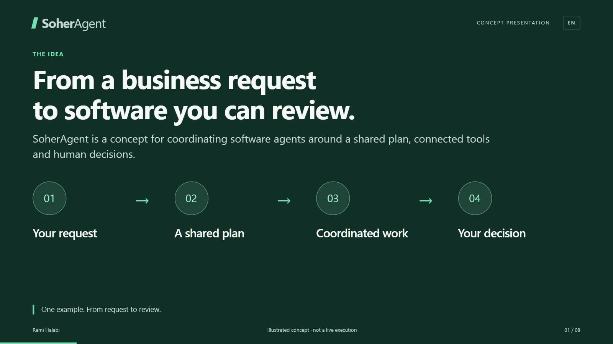
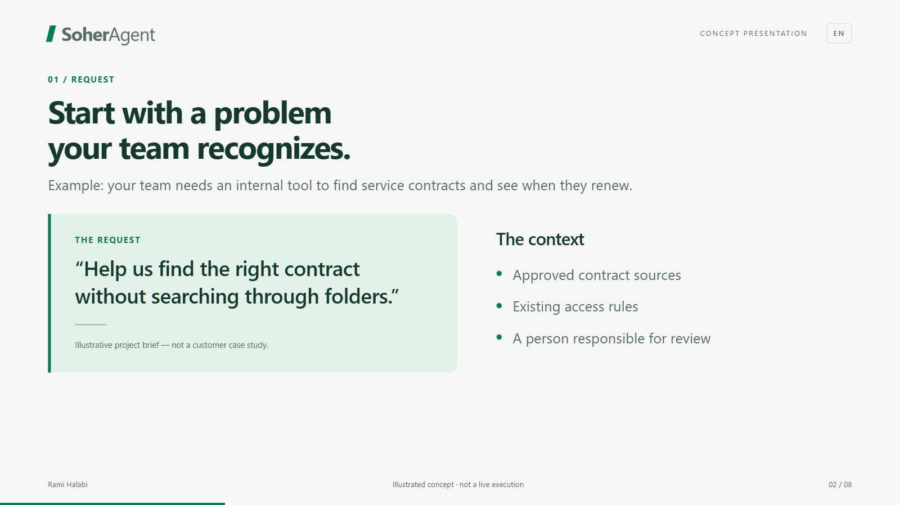
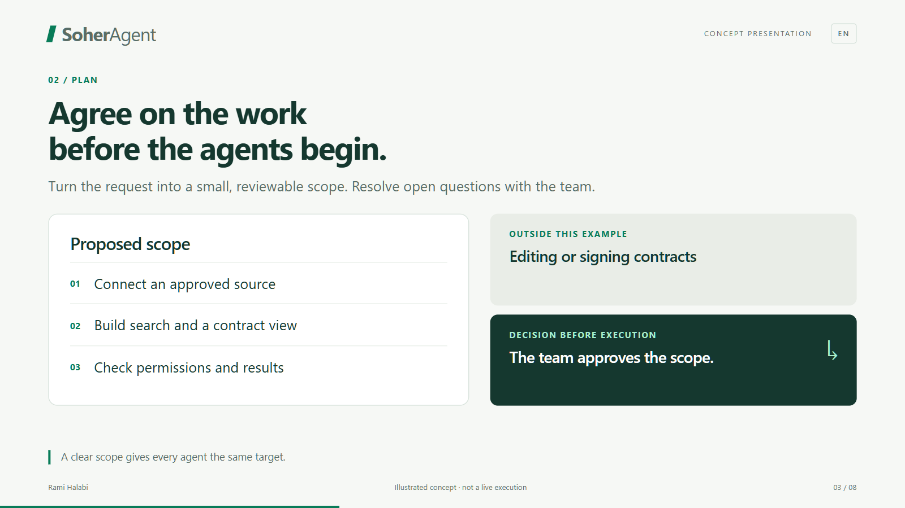

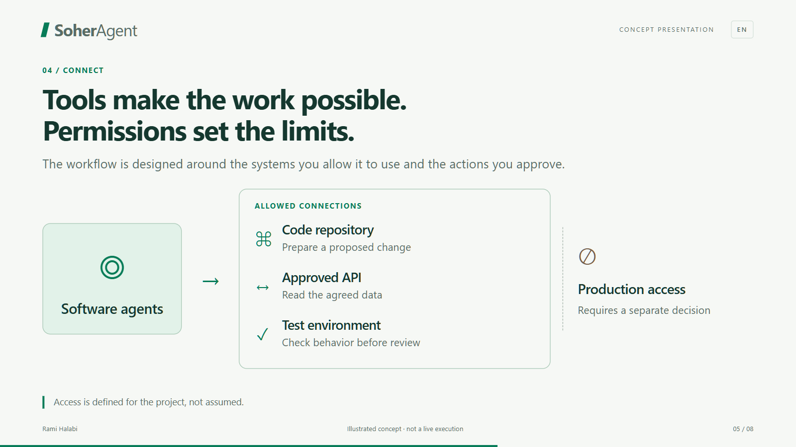
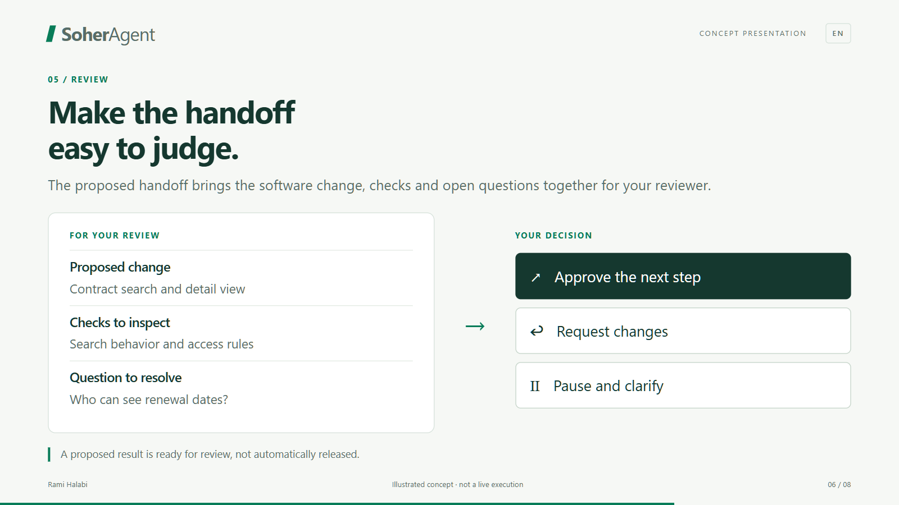
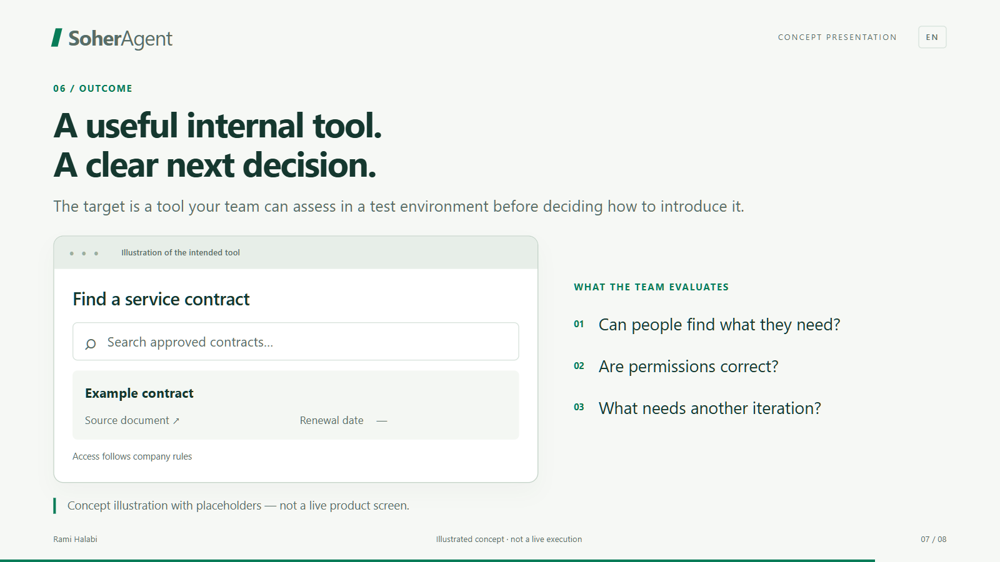

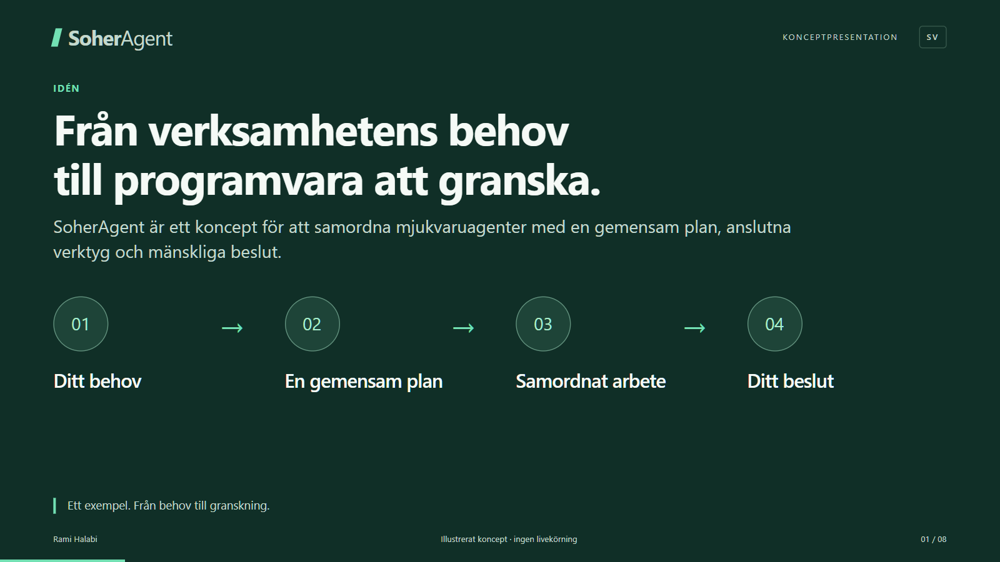
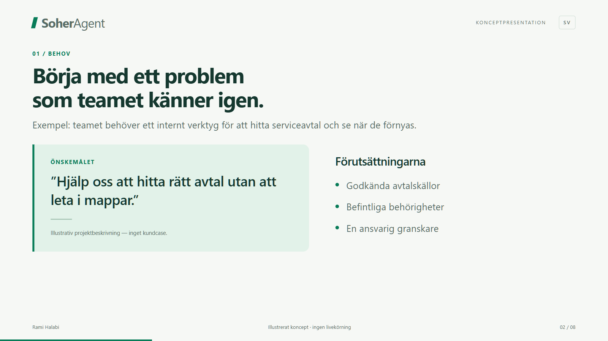
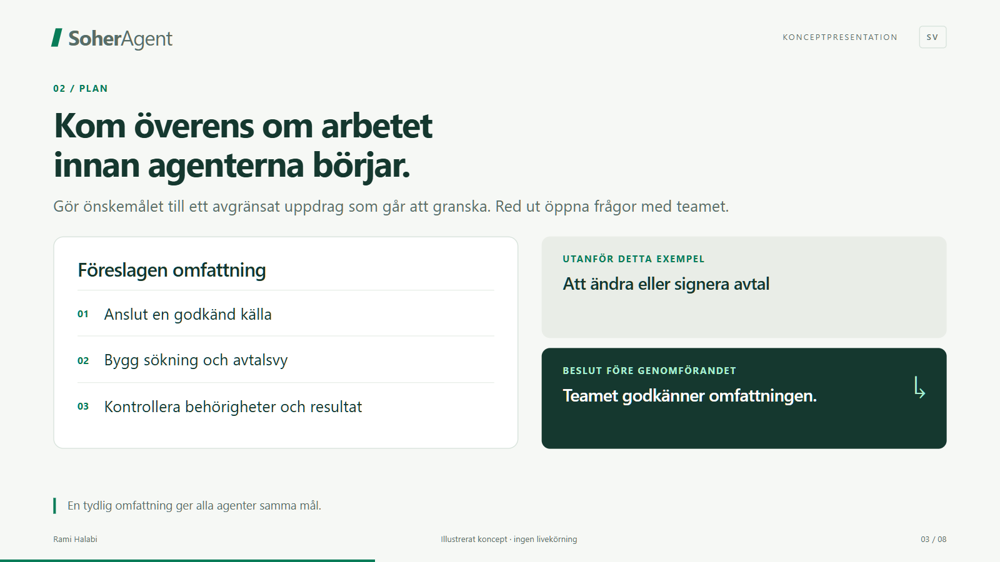
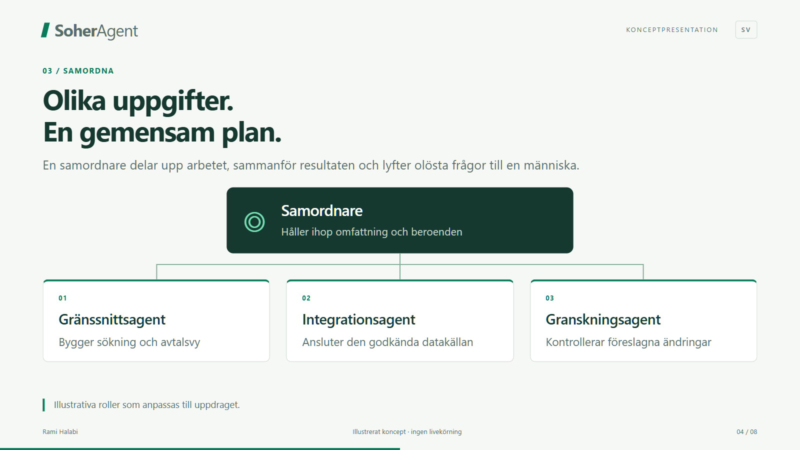
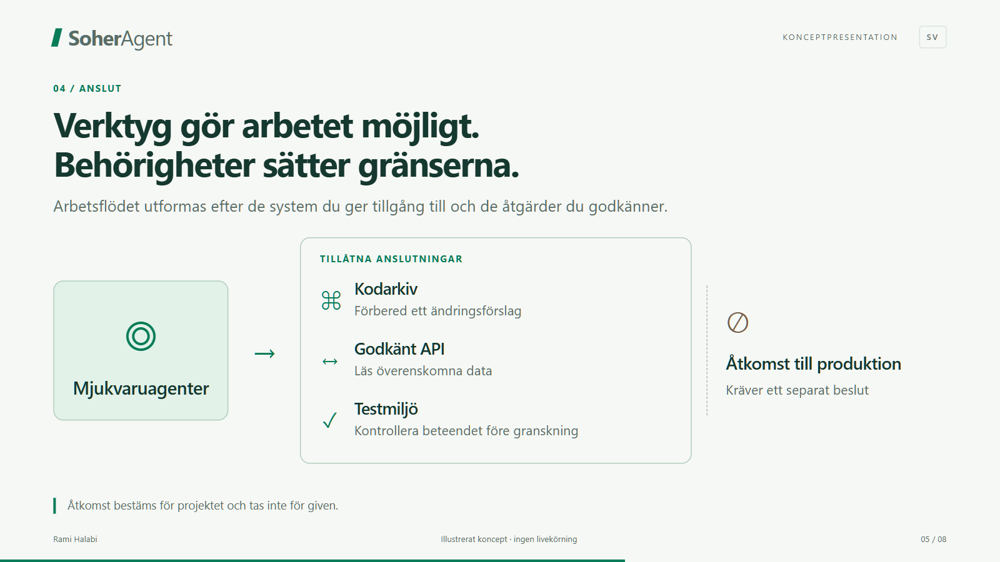
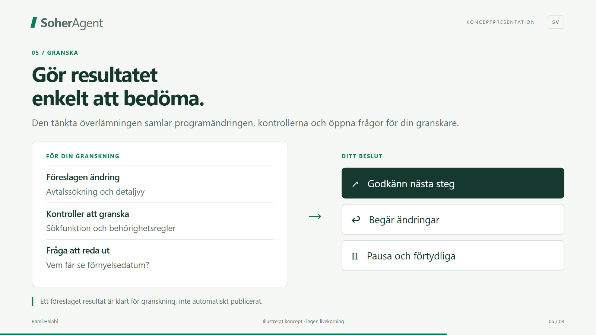
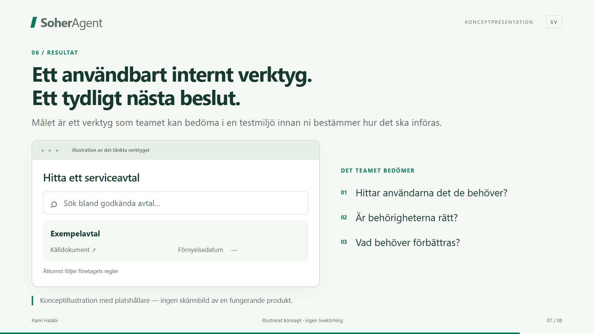
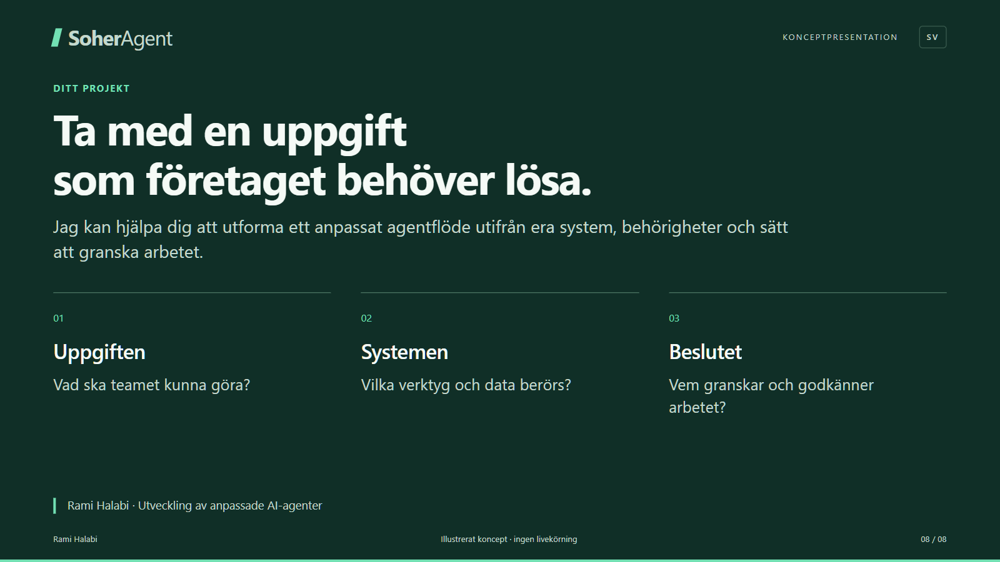
Eight slides following one illustrative software project. Review the story and visuals before recording. The example is a concept, not a customer case study or live product.
These are actual Slidev captures. Hektor, the published website and existing videos have not been changed.
Source and reproduction instructions












